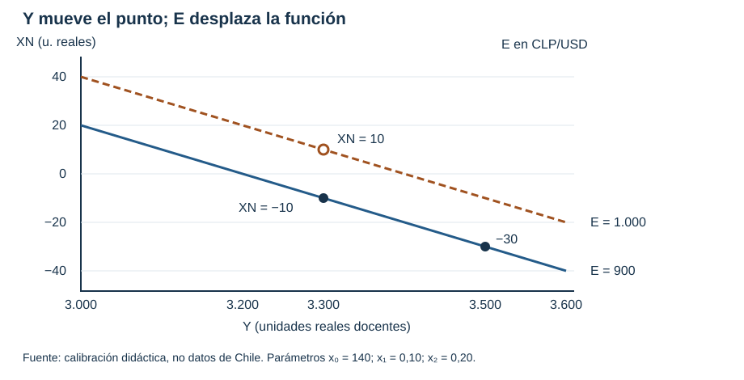
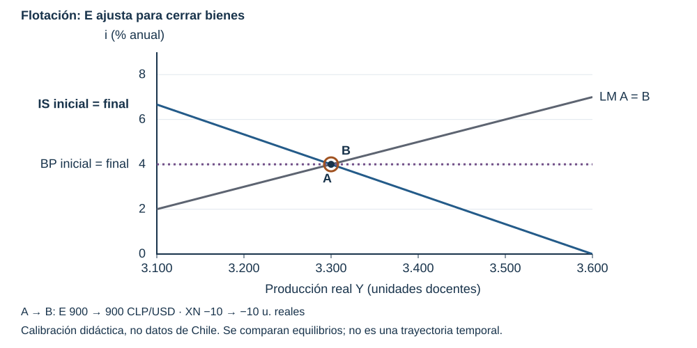
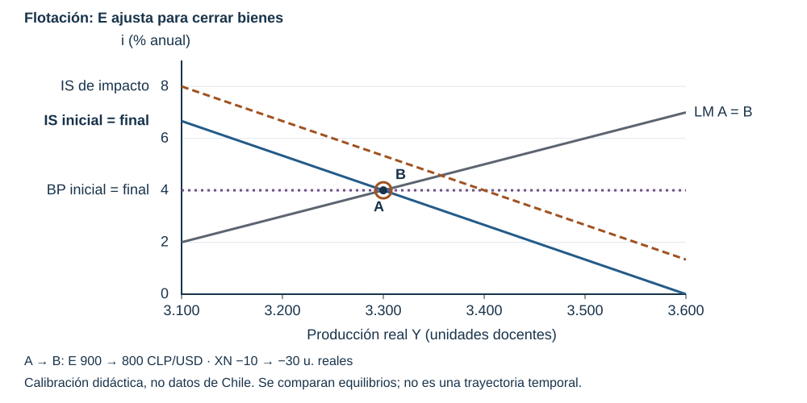
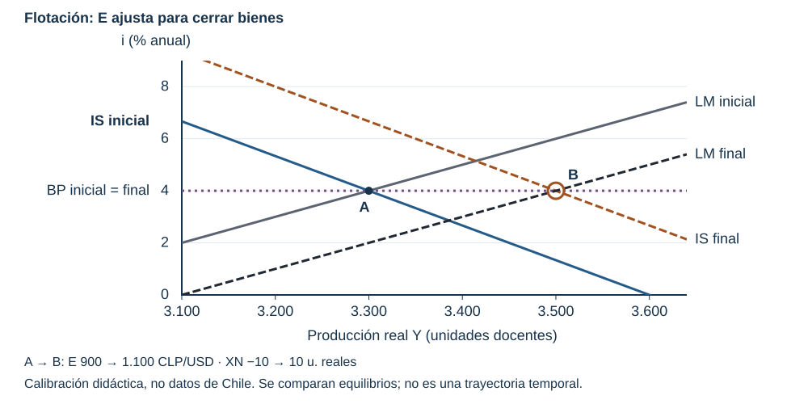
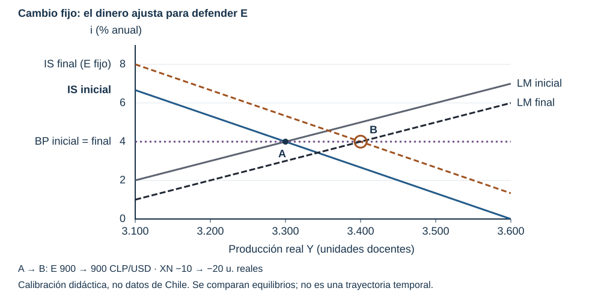
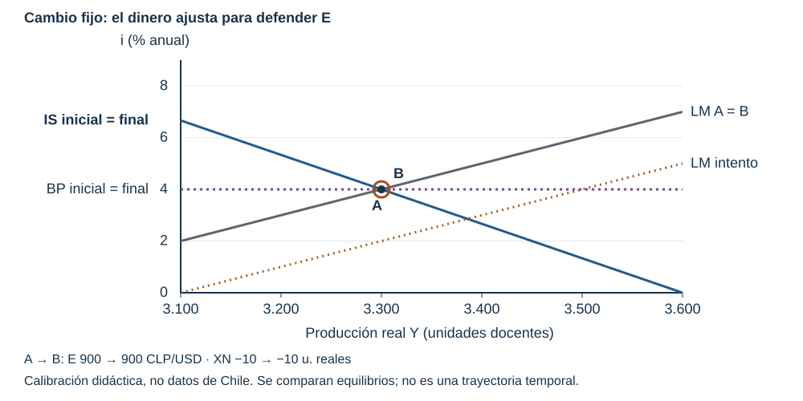

Antes de comenzar
Una empresa puede vender más y, al mismo tiempo, enfrentar una máquina importada más cara. Para ordenar ese problema necesitamos abrir el modelo de las clases 6 y 7: entran bienes y servicios del exterior, activos financieros internacionales y una regla sobre quién determina el precio del dólar.
La IS es la relación de equilibrio del mercado de bienes; la LM, la relación de equilibrio del mercado de dinero. Mundell-Fleming es la extensión que añade apertura comercial, activos internacionales y régimen cambiario.
Qué aprenderás. Construir las exportaciones netas antes de usarlas; resolver el equilibrio de una pequeña economía abierta; comparar políticas bajo flotación y cambio fijo; traducir los resultados a una decisión empresarial con límites explícitos. Esta es la Nota de estudio 9, correspondiente a la Clase 8. La Nota 8 corresponde a la Clase 7.
Ruta de lectura. La lectura principal contiene las secciones 1–9 y las comprobaciones. Lee antes de clase las secciones 1–4 (unos 20 minutos) y la crónica (8–10 minutos). En clase se trabajan las secciones 5–9. Las secciones de «Para ir más lejos» son opcionales; no se necesitan para resolver la práctica obligatoria. Al final encontrarás la procedencia.
Puente. En la Clase 6 cruzaste bienes y dinero. En la Clase 7 distinguiste velocidades de ajuste y separaste el efecto de la producción del efecto de la tasa sobre la inversión. Ahora el cambio del dólar altera el gasto en producción nacional, y los rendimientos externos restringen la tasa local. No basta con añadir otra curva al mismo dibujo: hay que decir qué variable puede ajustar.
1. Vender y comprar al exterior son operaciones diferentes
Primero, las exportaciones y las importaciones
Una viña residente en Chile vende vino a un comprador residente en Canadá. Esa venta es una exportación de bienes. Un visitante residente en Perú paga alojamiento a un hotel residente en Chile: es una exportación de servicios. La producción se entrega a un no residente, aunque el hotel nunca cruce la frontera.
Llamamos X al valor de las exportaciones de bienes y servicios. Llamamos IM al valor de las importaciones: compras de bienes y servicios de residentes a no residentes. Un comercio chileno compra una máquina fabricada afuera: importa un bien. Una empresa residente contrata un servicio informático a un proveedor no residente: importa un servicio. La residencia económica importa más que la nacionalidad del dueño.
Algunos textos llaman M a las importaciones. Aquí usamos IM, porque M ya significa cantidad nominal de dinero en el mercado monetario. No confundas una importación de maquinaria con un aumento de dinero.
Comprar un bono estadounidense es adquirir un activo financiero: un derecho a pagos futuros. Esa compra pertenece al canal financiero, no a X ni a IM. Una máquina es un bien de inversión; un bono es un activo financiero. Ambos pueden involucrar dólares, pero entran en partes diferentes del análisis.
Después, el saldo
Si exportamos 120 e importamos 100 en el mismo trimestre, vendimos al exterior 20 más de lo que compramos. El saldo resume dos operaciones; no reemplaza sus definiciones.
Esto dice: exportaciones netas (XN) son exportaciones (X) menos importaciones (IM). Antes de restar, usa el mismo período, moneda y criterio de valoración. No restes toneladas de cobre a dólares de maquinaria. En el modelo, todos los gastos son magnitudes reales medidas en una unidad común a precios de referencia; en una ficha de datos pueden ser valores corrientes en dólares, si ambas series lo son.
Tabla 1. Ejemplos didácticos del mismo trimestre, en unidades monetarias comparables. No son datos de Chile.
| X | IM | XN | Lectura del saldo |
|---|---|---|---|
| 120 | 100 | 20 | Superávit de bienes y servicios |
| 90 | 110 | −20 | Déficit de bienes y servicios |
| 100 | 100 | 0 | Saldo de bienes y servicios igual a cero |
XN no es toda la cuenta corriente: esta incluye también ingresos primarios (por ejemplo, intereses y utilidades) e ingresos secundarios (transferencias corrientes). Además, la balanza comercial de bienes excluye servicios. Antes de comparar un saldo de prensa con XN, revisa qué incluye.
Comprobación para intentar. En dos trimestres comparables, X se mantiene en 300 e IM pasa de 310 a 330. Calcula ambos saldos. ¿Puede caer XN sin que disminuyan las exportaciones? Explica qué componente cambió. No atribuyas automáticamente esa caída a un fracaso exportador.
2. Por qué cambian X e IM
El ingreso externo y el interno no son lo mismo
Si los clientes de otros países tienen más actividad e ingreso, pueden comprar más vino, turismo o servicios chilenos. Si los residentes de Chile reciben más ingreso, suelen comprar más productos nacionales y más importados. Una expansión local puede deteriorar XN aun cuando las exportaciones no cambien.
Usaremos Y_ext para el ingreso de los socios comerciales y Y para la producción e ingreso internos. El subíndice «ext» significa externo. No usamos Y* para ingreso externo, porque puede confundirse con la producción de equilibrio. Escribiremos «Y de equilibrio» cuando corresponda.
Una mayor demanda externa puede aumentar X; un mayor Y suele aumentar IM. «Puede» y «suele» recuerdan que también importan precios, contratos, capacidad productiva y preferencias. Estas relaciones no identifican por sí solas la causa de un dato observado.
El dólar cambia los precios relativos
Rosa evalúa importar un horno de USD 1.000. Si cada dólar cuesta 900 pesos, el precio antes de fletes e impuestos es 900.000 pesos. Si cuesta 990 pesos, el mismo horno vale 990.000: paga 90.000 pesos más, un 10 % adicional. Aquí mantuvimos fijo su precio en dólares.
La lectura es: E indica cuántos pesos chilenos cuesta un dólar estadounidense. Cuando E sube, el peso compra menos dólares: se deprecia. Cuando E baja, se aprecia. Una subida de 900 a 990 es un aumento de 90 dividido por 900, por 100: 10 %. El denominador es el valor inicial.
A precios dados, un producto chileno de 9.000 pesos cuesta USD 10 cuando E es 900. Con E de 990 cuesta aproximadamente USD 9,09. Puede volverse atractivo para el comprador extranjero. Al mismo tiempo, el horno importado se encarece para Rosa. Una depreciación puede aumentar las cantidades exportadas y reducir las importadas, después de que compradores y productores ajusten sus decisiones.
No todos ganan: una exportadora también puede tener maquinaria, insumos y deuda en dólares; Rosa vende principalmente en pesos y no recibe automáticamente más demanda extranjera por el pan. Para analizar su margen hay que conocer precios de venta, costos, contratos y exposición cambiaria.
Límite esencial: cantidades y valores. Si el precio en pesos de las importaciones sube antes de que cambien las cantidades, la cuenta pagada por ellas puede aumentar. Por eso una depreciación no mejora necesariamente XN de inmediato. El modelo básico supone una respuesta neta favorable en un horizonte suficiente para ajustar cantidades, con precios internos y externos dados. No fija cuántos meses necesita ese ajuste.
Según el régimen. Depreciación y apreciación describen cambios de mercado bajo flotación. En un régimen fijo, devaluación es elevar la paridad oficial en CLP/USD; revaluación es reducirla. Mantener E fijo durante un ejercicio no es lo mismo que devaluarlo.
3. Una función que resume los dos componentes
Una empresa puede necesitar prever muchos productos distintos. Para estudiar la dirección del gasto agregado usamos una aproximación lineal: no pretende reproducir cada contrato ni funcionar para cualquier dólar imaginable.
Se lee: el saldo externo parte de un componente autónomo neto x₀, disminuye cuando aumenta el ingreso interno Y y aumenta cuando sube E, bajo el supuesto comercial recién explicado.
- x₀ reúne los componentes autónomos netos. Recoge, entre otros factores, la demanda externa que dejamos dada. No son las exportaciones totales.
- x₁ mide cuántas unidades reales adicionales se importan cuando Y sube una unidad, manteniendo lo demás constante. Es una respuesta marginal, no una tasa de crecimiento.
- x₂ mide la respuesta neta del saldo a una unidad adicional de CLP/USD. Sus unidades son «unidades reales de XN por CLP/USD». No es un porcentaje.
Ejemplo resuelto de la economía de esta clase. Usaremos XN = 140 − 0,10Y + 0,20E. Con Y = 3.300 y E = 900: primero 0,10 × 3.300 = 330; después 0,20 × 900 = 180; por último 140 − 330 + 180 = −10. El saldo es negativo y no significa que X sea negativo.
Podemos reconstruirlo con funciones separadas compatibles: X = 210 + 0,10E e IM = 70 + 0,10Y − 0,10E. La primera dice que las exportaciones aumentan con E; la segunda, que las importaciones aumentan con Y y disminuyen con E. En ambas, X e IM están valoradas en la misma unidad real a precios de referencia. Al restarlas: 210 − 70 = 140; el término de Y queda −0,10Y; los términos cambiarios suman 0,10E + 0,10E = 0,20E. Así obtenemos la función anterior. En el ejemplo, X = 300 e IM = 310.
Estas funciones son una calibración didáctica local, no estimaciones para Chile. No convertimos importaciones corrientes multiplicándolas otra vez por E: su efecto de precios relativos ya está resumido en los coeficientes. La descomposición separada se usa en el rango de los ejemplos de la clase; para un shock de x₀ debe especificarse qué componente autónomo cambió.
E nominal y tipo de cambio real. E es un precio entre monedas. La competitividad depende de precios de bienes: si suben también los precios chilenos, la ventaja de una depreciación nominal puede desaparecer. En este capítulo suponemos precios internos y externos dados, por lo que el movimiento de E representa el cambio de precios relativos. No afirmamos que el tipo de cambio nominal y el real sean siempre iguales.

Cómo leerla. Con E = 900, aumentar Y de 3.300 a 3.500 lleva XN de −10 a −30: es un movimiento sobre la recta. Manteniendo Y = 3.300, aumentar E de 900 a 1.000 lleva XN de −10 a 10: desplaza la recta 20 hacia arriba. Estas dos comparaciones no son todavía el equilibrio completo de bienes, dinero y activos.
4. Abrir el mercado de bienes
El gasto total no coincide necesariamente con la demanda por producción nacional
Un hogar puede gastar en un teléfono importado; una empresa, en una máquina importada; el Estado, en equipos importados. Esas compras ya están incluidas en determinados gastos de consumo, inversión y gobierno. Para medir demanda por producción nacional, hay que descontar la parte producida afuera y agregar lo que los no residentes compran de nuestra producción.
Esto define Z, la demanda planeada por bienes y servicios de producción nacional: suma consumo C, inversión I, gasto público G y exportaciones netas XN. Restar IM evita contar producción extranjera como producción local; no dice que importar sea malo. La condición Y = Z dice, por separado, que la producción coincide con esa demanda planeada. Antes del ajuste pueden diferir, como aprendiste con inventarios.
Mantendremos C = c₀ + c₁(Y − T): consumo autónomo c₀ más la fracción c₁ del ingreso disponible, con impuestos T fijos. También I = b₀ + b₁Y − b₂i: inversión autónoma b₀, más la respuesta a las ventas b₁Y, menos el efecto del costo financiero b₂i. La tasa i se ingresa en porcentaje anual: 4 significa 4 %, no 0,04. b₂ mide unidades reales por punto porcentual de tasa.
Derivar la IS sin saltar las operaciones
Sustituye las tres funciones en Y = Z:
En palabras: la producción de equilibrio iguala cada componente de gasto, con consumo e inversión respondiendo al ingreso y con importaciones restando demanda nacional.
Lleva todos los términos con Y a la izquierda. Restar c₁Y y b₁Y y sumar x₁Y deja:
Esto dice que la parte de cada unidad producida que no vuelve como gasto interno debe igualar el gasto autónomo, el efecto de la tasa y el del dólar. Si llamamos A = 1 − c₁ − b₁ + x₁ al coeficiente de Y y K = c₀ − c₁T + b₀ + G + x₀ a la suma autónoma, la IS abierta queda:
Se lee: la producción que equilibra bienes es esa suma de gastos dividida por A. A una E dada, una mayor tasa reduce inversión y Y; un aumento de G o E desplaza la IS hacia mayor producción para cada tasa.
La fuga por importaciones reduce el multiplicador de bienes. Si solo G cambia, manteniendo i, E, impuestos y parámetros constantes, el aumento de Y por cada unidad de G es 1/A. Con c₁ = 0,75 y b₁ = 0,15, la economía cerrada tiene denominador 1 − 0,75 − 0,15 = 0,10 y multiplicador 10. Al añadir x₁ = 0,10, el denominador es 0,20 y el multiplicador es 5. Parte de las compras adicionales se dirige a producción extranjera. Esta comparación requiere denominadores positivos; no es todavía el multiplicador fiscal del sistema bajo flotación, porque allí E también cambia.
5. Tres relaciones y dos regímenes
Los activos del exterior añaden una restricción
Si dos activos comparables ofrecen rendimientos distintos, los inversionistas querrán cambiar su cartera. La demanda de dólares puede moverse aunque hoy no cruce ninguna mercancía. Para aislar esa fuerza suponemos una pequeña economía abierta: toma la tasa externa como dada y sus decisiones no cambian la actividad mundial. «Pequeña» describe esa influencia en mercados, no el tamaño de una empresa.
El caso básico tiene precios dados, capacidad para responder con producción, movilidad perfecta de capitales, activos comparables, prima por riesgo nula y depreciación esperada nula. La condición externa simplificada es:
En palabras: la tasa doméstica i iguala la tasa internacional i*, ambas para el mismo horizonte anual y en porcentaje. BP se usa para la condición de equilibrio externo del modelo de balanza de pagos. No representa «exportaciones iguales a importaciones». Un déficit de bienes y servicios puede coexistir con financiamiento externo; la horizontalidad de BP no impone XN = 0 ni informa por sí sola todo el financiamiento de la cuenta corriente.
La relación monetaria permanece:
Se lee: la oferta real de dinero M/P iguala su demanda, que aumenta con producción (coeficiente d₁) y disminuye con tasa (coeficiente d₂). M es dinero nominal y P el nivel de precios. Despejar Y significa sumar d₂i a ambos lados y dividir por d₁: Y = [(M/P) + d₂i]/d₁. Es la LM.
Decide qué queda dado antes de resolver
Tabla 2. Orden de solución con movilidad perfecta y paridad creíble. La tasa externa es exógena en ambos regímenes. C, I y XN se calculan después con las funciones de conducta.
| Régimen | Dado por la política en este modelo | Variables que ajustan | Orden de solución |
|---|---|---|---|
| Flotación | M/P | Y, i, E | BP da i; LM da Y; IS da E |
| Cambio fijo | E | Y, i, M/P | BP da i; IS da Y; LM da el dinero requerido |
Fijar E exige intervención: comprar divisas emite dinero local; vender divisas retira dinero. Suponemos defensa creíble de la paridad, reservas suficientes y ausencia de una esterilización que pretenda mantener independiente M/P. El caso fijo ilustra una restricción institucional; no afirma que Chile use ese régimen.
6. Ejemplo resuelto: equilibrio inicial bajo flotación
Esta es la única economía base de la nota, ayudantía y laboratorio. Calibración didáctica, no datos de Chile. Los gastos y el producto son flujos de un mismo trimestre docente, en unidades reales a precios de referencia. M/P es un saldo de dinero real; los coeficientes de su demanda lo relacionan con ese ingreso trimestral. E está en CLP/USD; las tasas son porcentajes anuales. P permanece dado.
La lectura es: hay 100 de consumo autónomo, se consume el 75 % del ingreso después de 80 de impuestos; la inversión parte de 160, sube 0,15 por unidad de Y y baja 15 por cada punto porcentual de tasa; el gobierno compra 200.
La lectura es: XN cae 0,10 por unidad de ingreso y mejora 0,20 por CLP/USD; hay 1.450 de dinero real; su demanda Md aumenta con ingreso y disminuye con tasa; la tasa externa es 4 % anual. Md ya es una demanda real de dinero.
Paso 1: prepara la IS. Calcula A = 1 − 0,75 − 0,15 + 0,10 = 0,20. Calcula K = 100 − 0,75 × 80 + 160 + 200 + 140 = 540. Entonces 0,20Y = 540 − 15i + 0,20E: la quinta parte de Y iguala el gasto autónomo ajustado por tasa y dólar. Dividir cada término por 0,20 da Y = 2.700 − 75i + E: esta es la IS abierta a cada E.
Paso 2: usa BP. La tasa doméstica queda en i = 4 % porque iguala la externa en el caso básico.
Paso 3: usa LM. Sustituye 4 en 1.450 = 0,50Y − 50 × 4. El segundo término es 200; suma 200 en ambos lados: 1.650 = 0,50Y. Divide por 0,50: Y = 3.300.
Paso 4: recupera E con la IS. Sustituye Y e i: 3.300 = 2.700 − 75 × 4 + E. Como 75 × 4 = 300, el lado derecho es 2.400 + E. Resta 2.400: E = 900 CLP/USD. El 900 es un precio nominal de esta economía docente, no una predicción de la cotización chilena.
Paso 5: comprueba los tres mercados. Consumo: 100 + 0,75 × (3.300 − 80) = 2.515. Inversión: 160 + 0,15 × 3.300 − 15 × 4 = 595. XN: 140 − 330 + 180 = −10. Bienes: 2.515 + 595 + 200 − 10 = 3.300. Dinero: 0,50 × 3.300 − 50 × 4 = 1.450. BP: 4 = 4. Se cumplen las tres y XN es negativo.

7. Dos políticas bajo flotación
Más gasto público: cambia la composición aunque Y no cambie
El Gobierno aumenta G de 200 a 220. ¿Se traslada íntegramente a mayor producción? Primero distingue el impulso a una E dada del resultado después del ajuste cambiario.
Con E todavía en 900, el multiplicador de bienes es 5 y el desplazamiento inicial de la IS es 5 × 20 = 100 unidades de Y. La nueva IS es Y = 2.800 − 75i + E: el intercepto aumenta 100 porque G aumentó 20. Es un desplazamiento inicial, no el aumento final de producción.
Si la tasa tendiera a superar 4 %, el mayor rendimiento atraería demanda por activos locales. La presión de apreciación reduce E, frena el saldo externo y compensa la demanda pública. Es una descripción esquemática del mecanismo de arbitraje, no una trayectoria estimada con duración observable.
Resuelve en el orden del régimen. LM y BP no cambiaron: i sigue en 4 y Y en 3.300. En la nueva IS, 3.300 = 2.800 − 300 + E = 2.500 + E. Restar 2.500 da E = 800. XN pasa a 140 − 330 + 160 = −30. Cayó 20, exactamente lo que aumentó G. C e I no cambiaron porque Y e i no cambiaron.
La expansión fiscal tiene efecto nulo sobre Y agregado en este modelo, pero cambia E, XN y la distribución sectorial del gasto. Una importadora enfrenta un dólar menor; una exportadora cobra menos pesos por cada dólar si no cambian sus contratos. Esto no calcula automáticamente sus utilidades.
Límite. La neutralización exacta requiere movilidad perfecta, paridad constante, dinero real dado, flotación, precios dados y ajuste comercial favorable. No equivale a afirmar que la política fiscal «no sirve» en Chile.

Más dinero: el dólar permite cerrar el aumento de producción
Ahora vuelve al equilibrio inicial y aumenta M/P de 1.450 a 1.550, con G = 200. La presión inicial sería una baja de i; la búsqueda de rendimiento externo presiona a la depreciación. Con precios dados y respuesta comercial favorable, esta eleva XN y desplaza la IS.
Cuenta completa. BP mantiene i = 4. En LM: 1.550 = 0,50Y − 200. Sumar 200 da 1.750 = 0,50Y. Dividir por 0,50 da Y = 3.500. En la IS original: 3.500 = 2.700 − 300 + E. Restar 2.400 da E = 1.100. XN es 140 − 350 + 220 = 10. La depreciación mejora el saldo más de lo que lo reduce el mayor ingreso.
C pasa a 2.665; I a 625. Verifica bienes: 2.665 + 625 + 200 + 10 = 3.500. La inversión sube 30 porque el efecto acelerador es 0,15 × 200 = 30 y el efecto de la tasa es 15 × 0 = 0. Así se conecta con la descomposición de la Clase 7.
Límite. El resultado compara equilibrios del modelo con dinero dado y precios fijos. No describe directamente una decisión de TPM ni mide cuánto subirán las ventas de una firma particular.

8. Qué cambia cuando el dólar se fija
Expansión fiscal con E fijo en 900
El Gobierno vuelve a subir G a 220, pero ahora el banco central defiende E = 900. Ya no puede dejar que la apreciación reduzca E. Cuando compra los dólares que presionarían a la apreciación, entrega pesos y expande el dinero.
BP mantiene i = 4. La IS con G nuevo da Y = 2.800 − 300 + 900 = 3.400. Se lee: con el dólar y la tasa dados, bienes determina la producción. Luego LM exige M/P = 0,50 × 3.400 − 50 × 4 = 1.500. La oferta real de dinero debe aumentar 50. No se agrega esa expansión como una segunda decisión independiente: es la acomodación necesaria para sostener la paridad.
C = 2.590; I = 610; XN = 140 − 340 + 180 = −20. Comprueba: 2.590 + 610 + 220 − 20 = 3.400. XN empeora por las importaciones asociadas al mayor ingreso, aun sin depreciación ni caída de X.
Límite. El resultado requiere reservas y credibilidad para sostener el régimen; no describe una paridad en crisis ni una defensa con controles de capitales.

Intento de expansión monetaria con E fijo en 900
Partiendo otra vez del equilibrio inicial, el banco central intenta llevar M/P a 1.550. La presión inicial a una menor tasa induce salida hacia activos externos y presión de depreciación. Para vender los dólares necesarios y defender E, el banco retira dinero local. La expansión autónoma se revierte.
Con E = 900, i = 4 y G = 200, la IS sigue determinando Y = 3.300. LM requiere M/P = 1.450. El intento de agregar 100 no sobrevive en el equilibrio final. XN continúa en −10. No es correcto conservar simultáneamente E = 900, i = 4, Y = 3.300 y M/P = 1.550: la demanda de dinero sería 1.450, distinta de la oferta supuesta.

9. Usar el modelo para una pregunta profesional
Un shock externo no es una decisión del banco local
Supón que i* pasa de 4 a 5 %, desde el equilibrio inicial. Bajo flotación, BP se desplaza hacia arriba. Con M/P = 1.450, LM exige Y = (1.450 + 50 × 5)/0,50 = 3.400. IS da E = 3.400 − 2.700 + 75 × 5 = 1.075. XN = 140 − 340 + 215 = 15. Sustituir da C = 2.590, I = 595 y demanda total de 3.400.
El mayor Y de este ejemplo no autoriza la regla «tasas externas más altas benefician a Chile». Aquí el dinero real queda dado, la demanda de dinero responde a la tasa, E ajusta y la inversión autónoma no cae. La inversión queda igual porque b₁ × ΔY = b₂ × Δi = 15 en esta calibración; con otros coeficientes cambiaría. Un shock financiero real puede incluir riesgo, expectativas, crédito y costos que el caso básico deja fuera.
Pregunta de empresa: comprar hoy, esperar o cubrir la exposición
El modelo ordena esta pregunta: ¿qué combinación de ventas, costo importado y financiamiento debería comparar si cambia el entorno externo o la política? Para Rosa, el horno en dólares puede encarecerse aunque su mercado local no crezca. Para una exportadora, más pesos por dólar de ingreso pueden venir junto con deuda e insumos más caros. Para turismo, una depreciación puede atraer visitantes extranjeros, pero la respuesta depende de capacidad, conectividad y contratos.
En un caso ficticio, una empresa cobra USD 10.000 y paga USD 6.000 de insumos en el mismo período. Sin coberturas ni cambios de cantidades, su flujo neto es USD 4.000: con E = 900 equivale a 3.600.000 pesos; con E = 990, a 3.960.000. El aumento de 360.000 no es utilidad neta: faltan salarios, impuestos, otros costos, deuda y sus fechas de pago. Una importadora que solo paga dólares enfrenta la exposición contraria.
Para decidir una inversión concreta pediríamos cotizaciones, plazos, monedas de facturación y deuda, coberturas, elasticidad de ventas, capacidad, impuestos y flujo de caja. Un escenario ayuda a hacer preguntas consistentes; no es un pronóstico ni una recomendación de compra.
Chile y la TPM. El Banco Central de Chile utiliza una tasa de política monetaria (TPM) y un régimen de cambio flexible. No opera eligiendo un M/P fijo como en este ejercicio. Con dinero endógeno para sostener una tasa, el cierre del modelo cambia. Tampoco puede fijar libremente dinero, tasa y dólar a la vez: las ecuaciones monetaria y de paridad los relacionan. La incompatibilidad entre cambio fijo, movilidad perfecta y política monetaria independiente se conoce como trilema. Para representar una trayectoria de TPM en flotación se necesitan expectativas sobre E y una condición de paridad más completa.
Ticket de salida. Escribe cuatro oraciones: qué cambia al abrir IS-LM; por qué BP horizontal permite XN negativo; qué variable ajusta en cada régimen; qué dato empresarial pedirías antes de decidir sobre el horno de Rosa. Comprueba tus ideas con el cuaderno de práctica.
Para ir más lejos
Estas extensiones son opcionales. No se requieren para las actividades obligatorias.
El tipo de cambio real
Con precios comparables, q = E·P_ext/P: el tipo de cambio real q es el precio de una canasta externa, convertido a pesos con E, dividido por el precio de la canasta interna. P_ext es el precio externo en moneda extranjera; P es el interno. Si trabajas con índices de precios, debes declarar su base: el nivel de q depende de la normalización. A precios dados, q se mueve proporcionalmente con E; no significa q = E numéricamente. Una inflación interna mayor puede compensar una depreciación nominal.
Paridad descubierta y prima constante
La paridad descubierta de tasas de interés, conocida por la sigla inglesa UIP, compara rendimientos de activos de igual horizonte sin cubrir el riesgo cambiario. Su aproximación anual, en porcentaje, es i ≈ i* + 100·(E_esperado − E_actual)/E_actual + ρ. Esto dice que la tasa local compensa la tasa externa, la depreciación esperada del peso y una prima ρ en puntos porcentuales. El signo delante de la depreciación esperada es positivo con E en CLP/USD: si esperas que el peso pierda valor, exiges más tasa local. La aproximación omite productos de tasas y usa un horizonte anual común; no mezcles una tasa anual con una variación esperada mensual.
Con expectativas planas y prima nula volvemos a i = i*. Con una prima exógena constante, i = i* + ρ: la BP sigue horizontal, a otra altura. El laboratorio permite ρ = 1 punto porcentual, que con i* = 4 fija i = 5 %. Que una prima cambie entre dos escenarios no crea por sí solo una pendiente: para una BP inclinada hay que especificar cómo responden los flujos y el riesgo a las variables del modelo. La movilidad imperfecta necesita otro cierre.
Cantidades que tardan y valores que se mueven primero
La condición de Marshall-Lerner, en su versión habitual alrededor de una balanza inicialmente equilibrada y con supuestos de oferta y precios, requiere que las elasticidades precio de las cantidades exportadas e importadas, en valor absoluto, sumen más de uno para mejorar el saldo tras una depreciación real. Una elasticidad mide cuánto cambia porcentualmente una cantidad ante un 1 % de cambio en su precio relativo. No deduzcas esas elasticidades del signo de una serie anual.
La curva J describe una posible caída inicial del saldo por el encarecimiento de las importaciones, seguida de mejora cuando ajustan las cantidades. No es una ley que obligue a toda balanza a dibujar una J. Nuestro x₂ positivo resume el resultado favorable después de esos ajustes y no describe esa transición.
Comercio y cartera pueden dar señales distintas
El IPoM de diciembre de 2021 describió menor apetito por activos locales y depreciación pese a un cobre alto. Esa evaluación documenta varios canales; no demuestra causalidad exclusiva ni cuantifica sus contribuciones. Además, comparar promedios anuales de E no es medir su variación dentro del año: el promedio pasó de 792,22 en 2020 a 759,27 en 2021 (−4,16 %), mientras que el informe de diciembre describía una depreciación acumulada en su propia ventana. No uses ambas medidas como si fueran la misma. La ficha permite practicar esta diferencia sin imponer una cifra de cierre anual a un informe publicado antes de terminar el año.
Procedencia
Las funciones y todos los valores del modelo son calibración didáctica, no estimaciones de Chile. Rosa Millán es un caso docente compuesto. Los canales empresariales propuestos son hipótesis explicativas que requieren evidencia adicional. Ninguna cifra del modelo es una proyección oficial.
Datos observados históricos: dólar observado, promedio anual 2020 = 792,22 y 2021 = 759,27 CLP/USD, Base de Datos Estadísticos del Banco Central, consulta 1 de noviembre de 2026. Variación calculada con valores publicados redondeados: (759,27/792,22 − 1) × 100 = −4,16 %. La serie puede ser revisada.
Contexto financiero de 2021: Resumen IPoM diciembre de 2021, Banco Central. Régimen y operación de política: Política Monetaria, Banco Central. Consultas: 1 de noviembre de 2026. Estas referencias documentan contexto e instituciones; no estiman los coeficientes del ejercicio. Para distinguir observación de proyección se usa la tabla 2 del IPoM de septiembre de 2022, con cobre 2021 observado y 2022 proyectado en esa edición.
Continuidad del curso: notas 7–8 (IS-LM cerrado y descomposición de inversión); Ayudantía 11 histórica y su versión 2 (2026); Blanchard, Macroeconomía, 7.ª edición, capítulos de mercados de bienes y financieros en economía abierta. El material histórico conserva su numeración; esta nota sigue la secuencia actual. Las soluciones de práctica están en una pauta separada, accesible después de registrar un intento.